Mole Miner
モール・マイナー
概要
モール・マイナーは、Fallout 76に登場するアパラチアのクリーチャーである。
背景
アパラチアの歴史ある過去の暗い残滓——モール・マイナーは、この地域の多くの洞窟、鉱山、および地上の採掘施設を住処とする、変異した人間の一種である。
彼らはかつて採掘に使用していた劣化したスーツの中に閉じ込められ、脅威と見なすものすべてを攻撃する。
苦しみにもかかわらず、彼らの認知能力と人間的な行動はほぼ全て残っている。
モール・マイナーは、古い採掘ロッカーの鍵など、以前の生活で大切にしていた物を頻繁に持ち歩いている。
パーヴェイヤー・マームルという名のユニークなモール・マイナーは、自販機を組み立て、バークレー・スプリングス駅に交易所を開設し（のちにラスティ・ピックに移転）、レジェンダリー・スクリップと引き換えに商品を販売している。
モール・マイナーが最初に遭遇されたのはウェルチであり、アパラチアのエンクレイヴとその研究部門が2086年の崩壊前にこれを実験対象としていた。
その後、1095年3月にファイア・ブリーザーがモール・マイナーと銃撃戦を交えるまで、別の遭遇に関する記録は知られていない。
彼らの著しい退化の具体的な原因は不明である。
放射線が原因なのか、積灰の山の地下住居の有毒な大気によるものなのか、あるいはその両方の組み合わせなのか。
しかし、その退化はFilter-O-Maticの呼吸装置と呼吸器なしでは正常に呼吸できないほど重大である。
モール・マイナーは高度に社会的であり、組織化されたグループ以外で遭遇されることはまずない。
彼らの階層構造は、大戦前の採掘作業の組織構造に従っており、実際の採掘員（スクレイパー、ディガー、ロックブレイカーを含む）がフォアマンとスーパーバイザーに率いられている——これは彼らが炭鉱作業員であった過去の証である。
ある時点で、Vault 76の監督官がマウンテンサイド・ベッド＆ブレックファストでモール・マイナーに重傷を負わされ、その体験を詳述するホロテープログを残している。
ほぼすべての者に対して敵対的だが（唯一の知られた例外はパーヴェイヤー・マームル）、モール・マイナーは極めて攻撃的で武装しており、モールラットを飼い慣らすことにすら成功している。
彼らはショットガン、アサルトライフル、ミサイルランチャー、さらにはモール・マイナー・ガントレットなどの即席武器を使用して敵を攻撃する一方、モールラットを通常の攻撃用動物から移動式地雷まで様々に活用している。
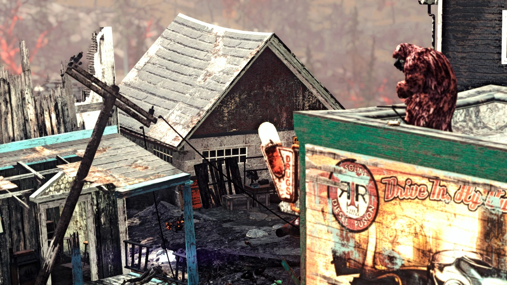
2102年以降の動向
2102年、モール・マイナーはラッキー・ホール鉱山の上層トンネルで採集を行っているのが目撃された。
Wastelandersの出来事では、2103年に帰還した翼ある者の信徒たちによって追い出された。
2104年、モール・マイナーは積灰の山の地下に生息する巨大モールラット——ウルトラサイト・タイタンに仕えていることが判明した。
また、ヌカ・ワールド・オン・ツアーのトンネル・オブ・ラブも襲撃した。
2105年、モール・マイナーはザ・クロスヘアの廃鉱山でブラッド・イーグルと衝突した。
最終的に、ブラッド・イーグルがトンネルの自分たちの区画をバリケードで封鎖したことで、両グループは戦闘を停止した。
特徴
身体的特徴
かつて人間であったモール・マイナーは、ずんぐりとしてたくましい人型に変異し、部外者に対して縄張り意識の強い敵意を示す。
四肢は極端に短く太く、爪を持っている。
永久的に前かがみの姿勢で、四肢を体に密着させている。
厚い層の衣服を着ているが、フードの下を注意深く見ると顔の一部が確認できる。
眼が不自然に飛び出し、顔は膨らんで輪郭が不明瞭である。
モール・マイナーは呼吸器と呼吸装置がなければ生存できず、それを除去するとほぼ即座に窒息してしまう。
人間には聞き取れない言葉を話す。
彼らの変異は強力な筋力を与え、重火器を難なく扱うことができる。
その攻撃性と耐久性により、よろめきに耐える能力を持ち、決然としたシャッフルで敵との距離を素早く詰めることができる。
ゲームプレイ属性
モール・マイナーは組織化されたグループで生活し、通常はフォアマンまたはスーパーバイザーに率いられている。
モールラットを除く全てに対して即座に敵対的で、モールラットは味方として共に戦う。
ショットガンやミサイルランチャーなど大ダメージの武器で標的に向かっていく。
低レベルのプレイヤーキャラクターを容易かつ迅速に倒すことができる。
主に鉱山エリア付近にグループで配置されているが、アパラチア各地でも見かけることがある。
バリアント一覧
| 名前 | レベル | 特記事項 |
|---|---|---|
| モール・マイナー | 2 | 基本バリアント |
| モール・マイナー・スクレイパー | 4 | — |
| モール・マイナー・ディガー | 8 | コンバットショットガンを追加装備 |
| モール・マイナー・ロックブレイカー | 14 | — |
| モール・マイナー・フォアマン | 22 | モール・マイナー・ガントレットを装備 |
| モール・マイナー・スーパーバイザー | 30 | ミサイルランチャーを装備 |
| グローイング・モール・マイナー | 40 | グローイングブラッド、核廃棄物をドロップ |
| モール・マイナー・サッパー | 50 | ミサイルランチャー装備 |
| モール・マイナー・ドレッジャー | 65 | ミサイルランチャー装備 |
| モール・マイナー・スカルクラッシャー | 80 | ミサイルランチャー装備 |
| デッドリー・モール・マイナー | 95 | 最上位バリアント |
スコーチ・モール・マイナー
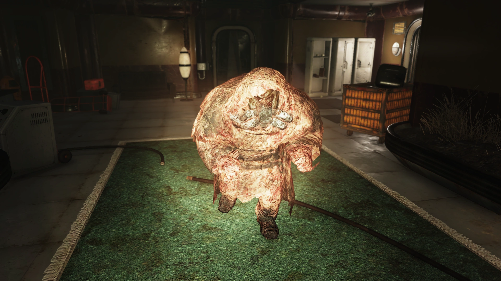
スコーチ病に感染したモール・マイナーの焦げた肉質のバリアント。
通常のモール・マイナーのすべてのバリアントには、同じステータス、能力、アイテムを持つ対応するスコーチバリアントが存在する。
スコーチビーストやスコーチビースト・クイーンに攻撃されるとスコーチ化し、他のスコーチクリーチャーの味方になることがある。
モール・マイナー・ジャガーノート
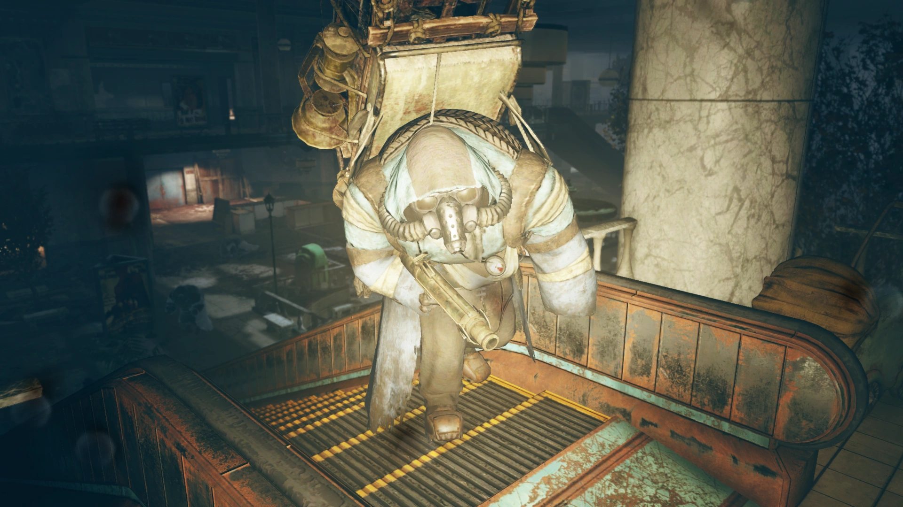
水色のマントと重い鉱石のバックパックを身につけた、非常に強力なモール・マイナー。
デイリーオプスの敵勢力がモール・マイナーの場合にボスとして登場する。
トレジャーハンター
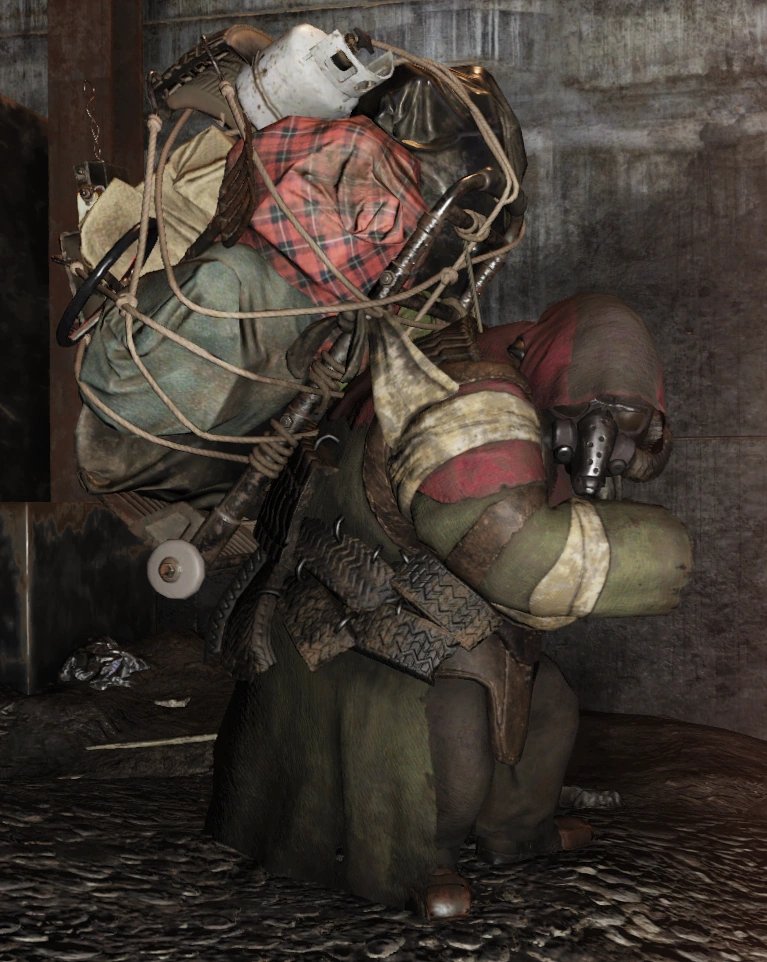
「Hunt for the Treasure Hunter」コミュニティイベント中に遭遇するユニークなモール・マイナーバリアント。
背中にハンドカートを大型バックパックとして括りつけ、ロープで様々な袋やその他の物を固定している。
バックパックにはウォーキートーキーが取り付けられており、無線の静電音とモールス信号を発している。
プレイヤーが近づくほど音量とパルス速度が上がり、スコーチやフェラル・グールの将校がアパラチアの核発射コードを持っているのと同様の仕組みである。
トレジャーハンターは常にレジェンダリーの敵として出現する。
- 常に戦闘から逃走する
- 他のNPCと戦闘を行わない
- Wasteland WhispererのPerkで鎮静化できない
ウルトラジェネティック・モール・マイナー・ストーカー
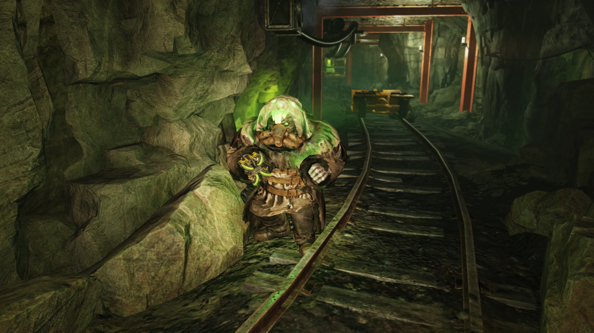
Gleaming Depthsアップデートで他のウルトラジェネティッククリーチャーとともに追加された。
頭部にウルトラサイトの破片が突き出ている外見上の特徴を持つ。
レイド「Gleaming Depths」がアクティブな間のみ、フェーズ2と4に出現する。
このモール・マイナーの攻撃は、HP、耐性、その他のダメージ軽減に関係なく、一撃で即死させていた。
出現場所
- ビッグ・ベンド・トンネル
- ビッグ・メドウズ・ガスウェル（Skyline Valley）
- ブラックウォーター鉱山
- ブリム採石場
- ホーンライト・インダストリアル本社 地下
- ホーンライト試験場 2・3・4
- カーウッド鉱山
- モノンガー発電所
- モノンガー
- マウント・ブレア操車場
- マウント・ブレア
- ザ・バーニング・マイン
- ザ・ラスティ・ピック
- アンキャニー・キャバーンズ
- ウェルチ
著名なモール・マイナー
- パーヴェイヤー・マームル — ザ・ラスティ・ピックで見つかるベンダー（Wild Appalachiaで追加）
発見できるホロテープ・メモ
マウンテンサイド・ベッド＆ブレックファストのポーチにある即席テーブルの上で入手。
＊苦しい呼吸＊ ああ……まずい、まずい、まずい。
集中しようとしているのですが、この痛みが尋常じゃない。
意識を失うかもしれないので、まだできるうちにこれを録音しておきたかった。
ある種の……ガスマスクを被って……厚いコートを着ていたけど、人間じゃない、人間じゃないものに襲われた。
スティムパックはもうない……自分が言っていたことを実践できてないっていう面白い冗談がここにあるわね……
こちらは監督官。できれば最後にならないことを祈りつつ、通信終了。
ブリム採石場の南西にある塔の建物内、テーブルの上で入手。
2140時、3/10/95 任務No. 23 目標：ブリム採石場 ヤス、ギャレット、ダスティン、オマール、そして私の5名で、本日日没の約1915時にブリム採石場への攻撃を開始した。
偵察報告では、我々の安全圏に近すぎる数の敵がいることが示されていた。
中程度の数の、まあ何と呼べばいいか分からないものと遭遇した。
古い重装鉱山スーツを着た二足歩行の何かに見える。
モンスターのように唸り、金切り声を上げるが、財布、鍵、時計が見つかる……
この新しい世界のすべての恐怖を理解できるようになるかどうか分からない。
結果：採石場頂上のキャンプを確保。全敵を排除。
戦死者1名：ギャレット。ダスティンは私たちを慰めようとした——おそらく苦しまなかっただろうと。
倒れる前に逝ったと。まだ20歳になったばかりだった。
この地獄のような世界しか知らなかった。それが彼を強くした。
まだ子供だったが、他者を助けるために戦い死ぬ覚悟があった。彼にはもっと良い運命が相応しかった。
採石場の頂上で火を焚けば残りの敵が来ると予想したが、何も来なかった。
他の報告と同様に、彼らは何も感じないし何も気にしないようだ。
人間ではありえない。少なくとも、もはや人間ではない。
出荷場近くの木箱のそばにギャレットを埋葬した。
彼にできるせめてもの事だった。
日の出とともに、丘の上の敵を攻撃する。チームはあそこに何が待っているか知っている。
以前、チャールストンで消防副官だった頃、新人に最初に教えたのは恐れずに炎の中に入ることだった。
ファイア・ブリーザーと部隊にも同じことを叩き込んできた。
この採石場の頂上にどんな炎が待っていようと、我々は準備ができている。
エンクレイヴ研究施設の実験室内、セルブロックBを過ぎた部屋のテーブルの上。Steel Dawnで追加。
被験体 B-06：
この被験体にはほとんど同情を覚える。
偵察隊がウェルチから2体を回収した。かつての住民だったと思われる。
中程度の知能を有しているように見える。
しかし、一方の被験体から呼吸装置を取り外したところ、ほぼ即座に窒息した。
さらなる研究の価値があるかもしれない。
ザ・クロスヘアの廃鉱山にて、鉱山内の玉座近くにあるアイスクリームカートの上。
一掃するたびにもっと現れた。
ここにあったガラクタでトンネルをバリケードで塞いだら、ようやく出現しなくなった。
備考
- 死亡したモール・マイナーの死体からマイナーのキーが見つかることがあり、反復可能な雑務クエスト「Lost and Found」がアンロックされる。
登場作品
モール・マイナーはFallout 76にのみ登場する。
舞台裏
モール・マイナーのセリフの多くは字幕では「くぐもった声」とされているが、ゲームファイル内のスクリプトノートには完全なセリフが含まれている。
対話は意味不明に聞こえるかもしれないが、元のスクリプトノートはモール・マイナーのボイスラインを注意深く聞けば聞き取れる。
デザイナーのフェレット・ボドワンは、これらのスクリプトノートが「直接的なカノンではない」とし、「あまり深読みしないでほしい」と述べている。
ゲーム内では直接明言されていないが、モール・マイナーはある程度ウルトラサイト・タイタンを崇拝しているようである。
開発者たちはNuka-World on Tourアップデートの開発中にこのつながりを決定したが、崇拝の具体的な内容や、それに必要な知性のレベルについては「より未解決の問題」であるとしている。
▶ モール・マイナーのスクリプトノート（クリックで展開）
待機時のセリフ：- 掘り続けなきゃ……見つかるさ……もうすぐ……
- また地上のヤツが来ないかな……
- あの緑のヤツら……トンネルの中じゃ他と同じで何も見えねぇ……
- 爪を研いでおかねぇと……
- あの青いスーツのヤツら……ズタズタに引き裂いてやりたい……
- ウグッ！ それだけか？
- ウグッ！ ぶっ殺してやる！
- アグッ！ 殺してやる！
- ウッ！ 背骨を引きずり出してやる！
- やりやがったな！ お前は死んだ！
- 来いよ！ それだけかよ？
- アグッ！ どうってことねぇ！
- アグッ！ 痛ぇじゃねぇか！
- 今だ！
- あそこだ！
- 殺せ！ 殺せ！
- 全員バラバラに引き裂いてやる！
- 全員ぶっ殺してやる！
- 死ね！
- 皮を剥いでやる！
- 全身の骨をへし折ってやる！
- 何もなかった……
- 終わりだ……
- 仕事に戻れ……
- 忘れろ……
- クソ。逃げられた。
- 次こそは……
- 何だ？
- ん？
- ふーん。
- 誰だ？
- 何か……
- あっちだ……
- こっちか？
- ふーむ……
- もうすぐ……
- 時間の問題だ……
- ここか？
- ああ。そうだ。ざまぁみろ。
- チョロいな……
- 死んだままでいろ……
- それでいい。死ね。
- ハッ。それだけかよ？
- 見つけてやるぞ……
- いつまでも隠れてられねぇぞ……
- ここにいるのは分かってるんだ……
- 出てこい……
- ウザいな……
- その報いを受けさせてやる！
- 死んだな。次はお前だ！
- 殺す理由がもう一つ増えたぜ！
- 次はお前の番だ！
- ぶっ殺してやる！
- お前は死んだ！
- バラバラに引き裂いてやる！
- 顔を真っ二つにしてやる！
- お前の骨でトンネルを飾ってやる！
- 二度と日の光を拝めなくしてやる！
- 叫べよ、このクソ野郎！
- 血を流せ！ もっと流せ！
- 全身の骨をへし折ってやるぜ！
- お前の目に直接爪を突き立ててやる！
- 歯を爪で引っこ抜いてやるぜ！
- 逃げてみろよ！
- 地獄まで引きずり込んでやる！
- このクソ野郎を殺すぞ！
- 接近戦は好きか？
- 埋めてやるよ！
- バラバラにしてやる！ 床にはらわたを撒き散らしてやる！
- お前の骨が折れる音を聞かせてくれ！
- 出血して死にやがれ、このクソ野郎！
- くらえ！
- 地獄で会おうぜ！
- 引き裂いてやる！
ギャラリー
ゲーム内
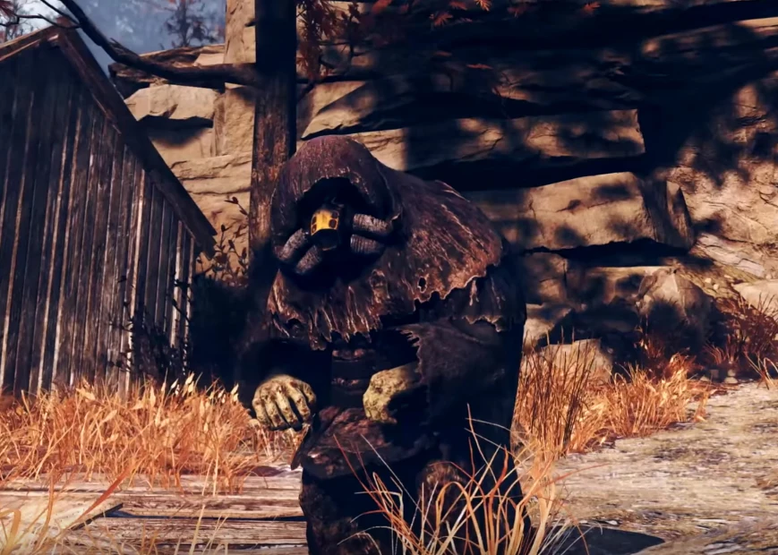
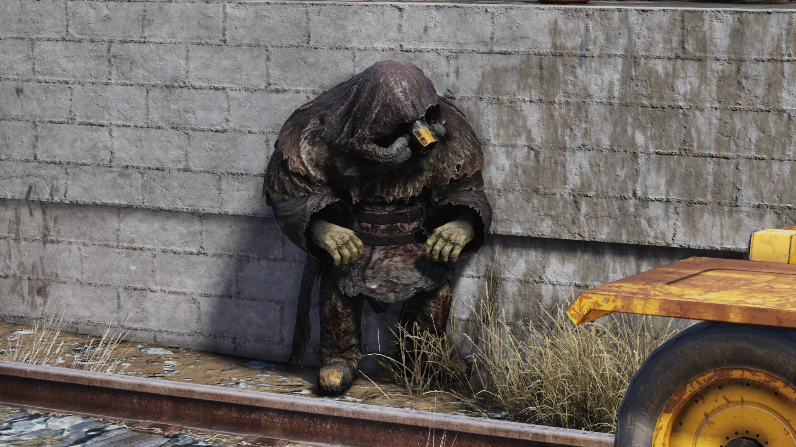
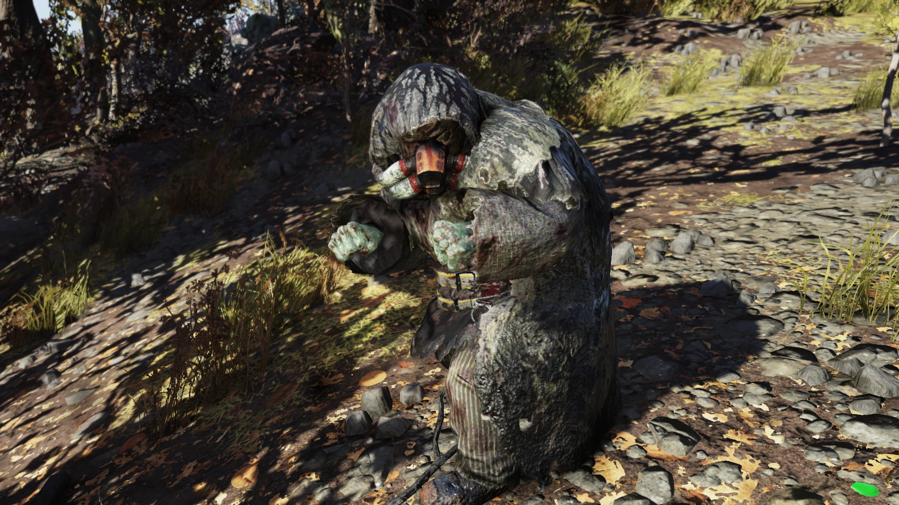
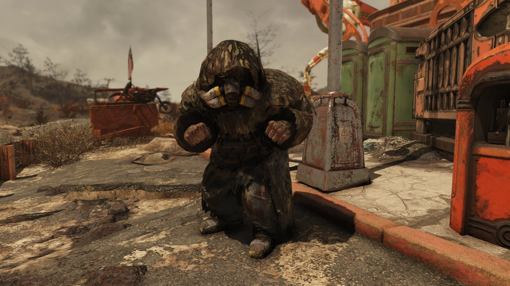
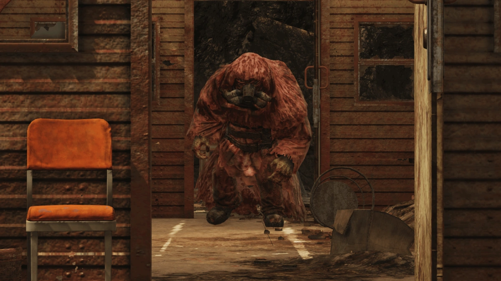
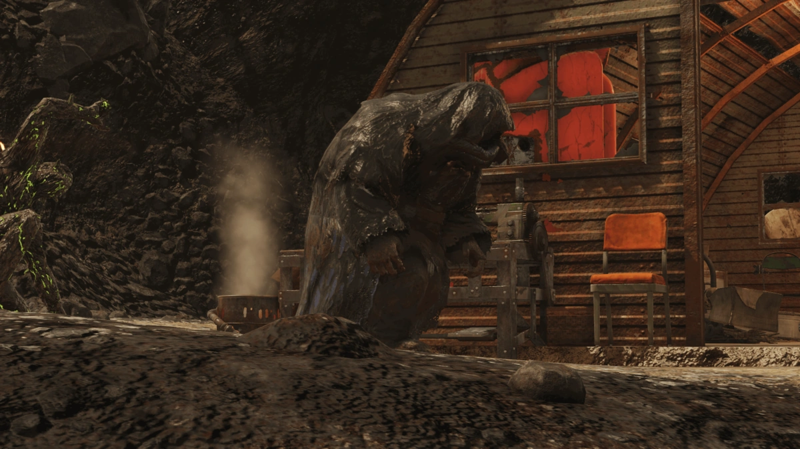
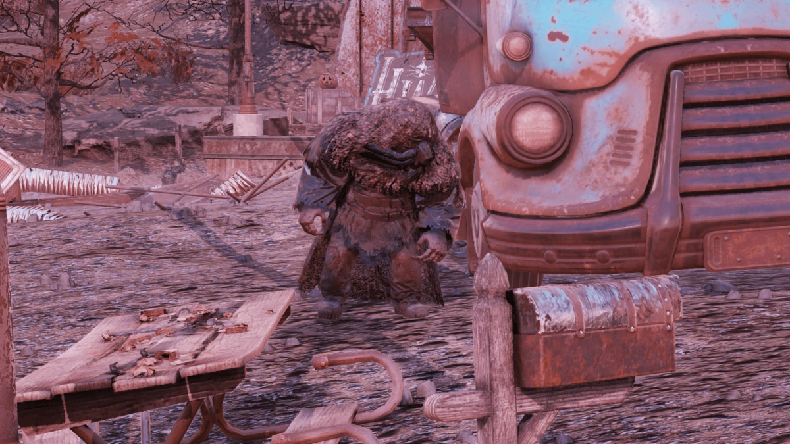
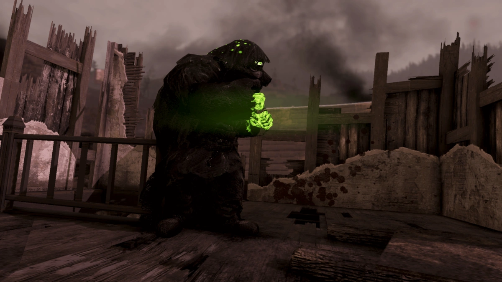
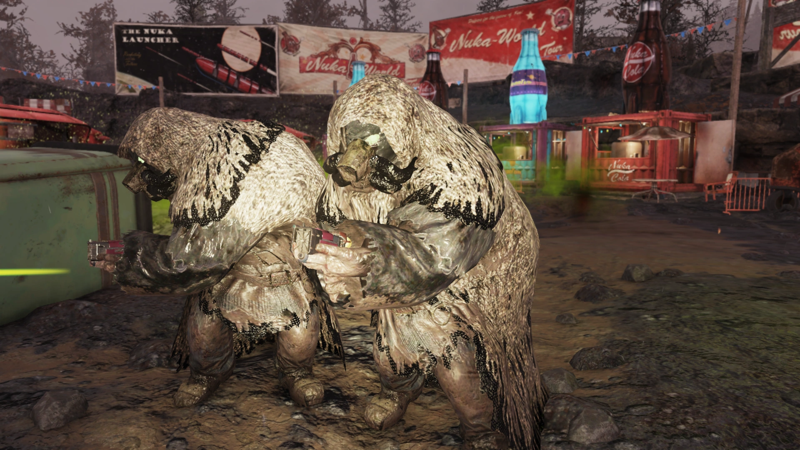
アート
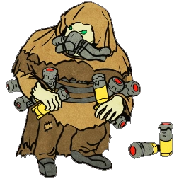
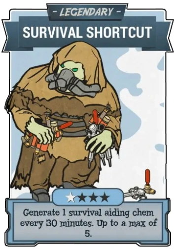
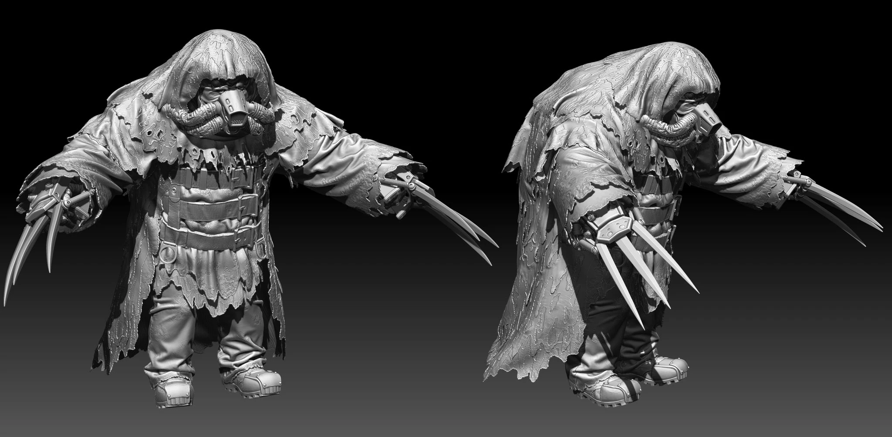
Fallout 76を代表するクリーチャーの一つであるモール・マイナー。
序盤の積灰の山エリアで初めて遭遇した時の衝撃は忘れられません。
財布や時計を持っているという設定がまた切ない——彼らはかつて普通の炭鉱夫だったんですよね。
スーツの中に閉じ込められ、呼吸装置なしでは生きられないという設定は、Falloutらしい残酷な皮肉が効いています。
ゲームプレイ的にはショットガンやミサイルランチャーを容赦なくぶっ放してくるので油断大敵です。
特にスーパーバイザー以上のバリアントがミサイルを撃ってくると本当に危ない。
一方で、パーヴェイヤー・マームルのように交易を行う個体もいるのが面白い。
完全に理性を失ったわけではない——そこがフェラル・グールとの違いであり、モール・マイナーをより悲劇的な存在にしています。
スクリプトノートの台詞を読むと、彼らの攻撃性の裏に「かつて人間だった」という自覚が垣間見えて、何とも言えない気持ちになります。
This article was created by translating and editing Mole miner from Nukapedia: The Fallout Wiki.
Licensed under the Creative Commons Attribution-Share Alike License (CC BY-SA 3.0).
© Overseer Mohi's Terminal — Fallout Lore Archive
コミュニティ維持のため、寄付を受け付けております。
COMMENTS